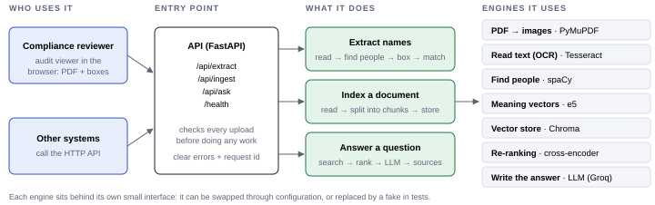
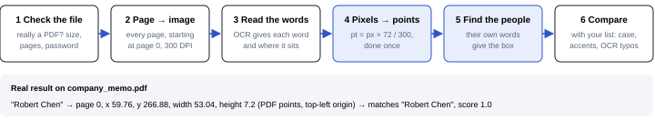
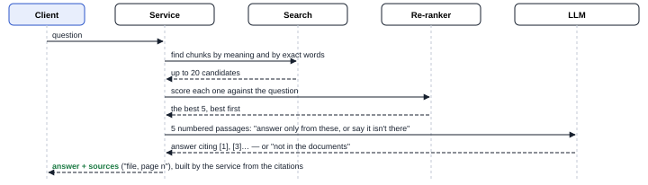
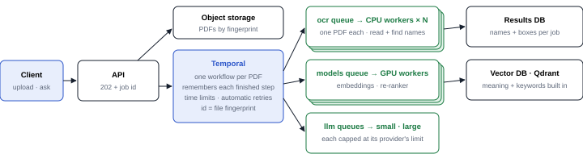

Give it a scanned PDF and it returns every person mentioned, with the page and the exact box where the name sits, so a reviewer can check it. It also compares those names with a list you send, and answers questions about uploaded documents, citing the page each answer comes from.
Details: DECISIONS.md (decisions, limitations, use of AI) · run with docker compose up --build, then open http://localhost:8000/viewer



| Need | Choice | Why | Trade-off |
|---|---|---|---|
| Read text | Tesseract | Free, runs on CPU, gives each word's position | Weak on poor scans; a cloud OCR could replace it |
| PDF → images | PyMuPDF | Fast, knows page sizes in points | AGPL licence; pypdfium2 if that matters |
| Find people | spaCy, large English | Best on our samples; the small one took a project for a person | ~400 MB more; weak on ALL CAPS |
| Compare names | rapidfuzz | Whole-name similarity, fast | Fixed 0.90 threshold (configurable) |
| Search by meaning | e5 multilingual + Chroma | Spanish and English, no extra servers | One writer; a database service at scale |
| Rank results | Multilingual cross-encoder | ~1.5 s per question on CPU | A stronger one took 21 s on CPU |
| Write answers | Groq, gpt-oss-120b | Free, fast; any OpenAI-compatible provider | Free-tier limits; text leaves the machine |
Today one process does everything: it reads the PDF, embeds it, stores it and answers questions. To scale we follow a document and a question through our own components, find where each one gets stuck, and fix that point.
| Path | Stage | Where it gets stuck today | Fix at scale |
|---|---|---|---|
| Document | Read + find names | The request does the work in the one API process: a few big PDFs at once fill the CPU and the other requests wait | The API stores the PDF and returns a job id; Temporal queues one workflow per PDF; OCR workers pull from the queue and are added as it grows |
| Document | Embeddings | The model runs on CPU inside the API, loaded again in every process | Model workers on GPU, embedding many chunks per call |
| Document | Vector DB writes | Embedded Chroma: one process owns its files, so many workers can't write to it | Qdrant service: many writers at once, more replicas as data grows |
| Question | Hybrid search | Keyword search reads every stored chunk on every question: slower with each document added | Qdrant runs meaning + keyword search on its own indexes (bge-m3 gives both vectors from one model); read replicas for many questions |
| Question | Re-ranking | ~1.5 s of CPU per question inside the API; a burst of questions queues up | Re-ranker on a GPU model server that scores several questions together |
| Question | LLM | Free tier with a per-minute limit; a burst gets rejected | Paid tier; calls go through a queue capped at the limit, so they wait instead of failing; simple questions use the small model (§7) |
Temporal is a workflow engine built on queues and workers. Each PDF is one workflow, our recipe: check, read, find names, split, embed, store. Each step that calls an engine is an activity, with its own time limit and retries. Activities wait in task queues that workers pull from.

Why Temporal and not a plain queue. It remembers every finished step: a worker that dies mid-PDF is replaced and the PDF carries on from the last finished step. Temporary failures are retried with growing waits; a bad file fails once. The file's fingerprint is the workflow id, so a duplicate upload runs once. A queue can be capped at a provider's limit, and every step stays in history: an audit trail.
Engines that fall short. Each engine sits behind its own interface, so a replacement is a plug-in plus a config change, kept only if it wins on a golden set of real documents. Embeddings, re-ranker and LLM already handle Spanish; OCR and the name finder do not.
| Engine | What falls short | At scale |
|---|---|---|
| Find people | No real names on an ALL-CAPS Spanish property certificate | Rewrite ALL-CAPS lines in normal case (same length, boxes don't move); then measure a multilingual model such as GLiNER |
| Read text | English only | Spanish language pack: a config change |
| Rank results | The stronger re-ranker took 21 s on CPU | bge-reranker-v2-m3 once it runs on GPU |
| Failure | What we do | Caller sees |
|---|---|---|
| Not a PDF, empty, too big, too many pages, password | Checked before any work starts | 4xx with a specific code |
| OCR engine missing or stuck | Time limit per page | 503 |
| Poor scan | Words the OCR is unsure of are dropped: no box over noise | fewer names |
| LLM slow, busy or down | Time limit and automatic retries; names and indexing keep working | 503 / 502 |
| Answer not in the documents | The LLM says so; an answer citing nothing is "not found" | "not found" |
| A document tries to give the LLM orders | Document text is marked as data; the LLM has no tools | normal answer |
| Same file uploaded twice | Same fingerprint, so it replaces itself | no duplicates |
| Text in ALL CAPS, other languages | Known limits of the name finder; fix in §5 | fewer names |
An orchestrator in front of the models picks one, checks its answer and escalates when needed: a short Temporal workflow the API waits on, deciding in plain code (cheap, reproducible).